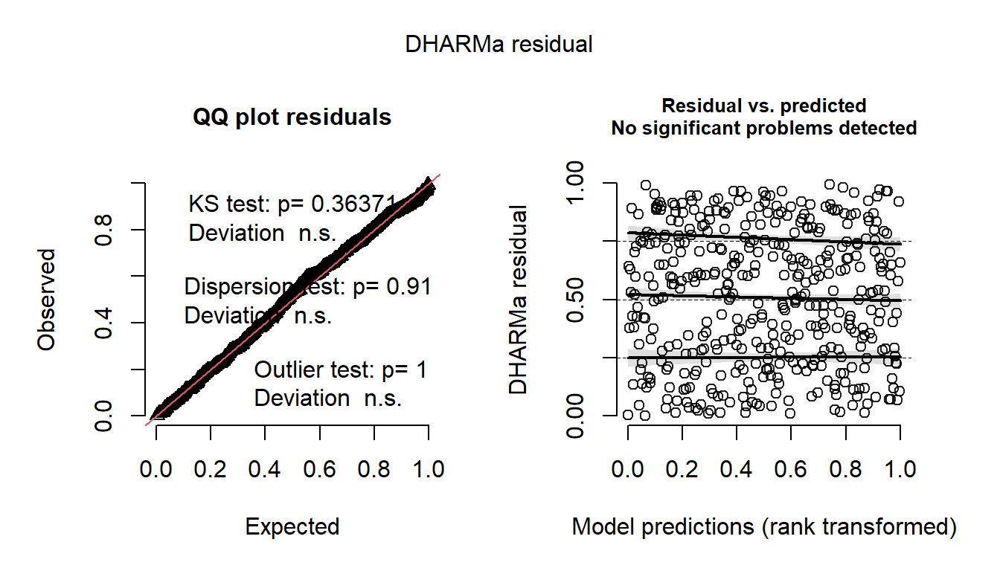
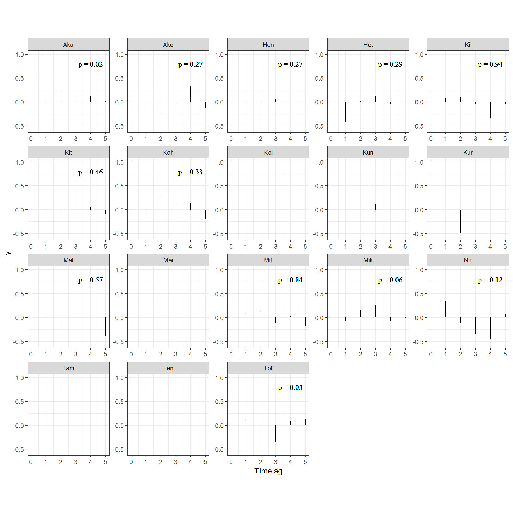
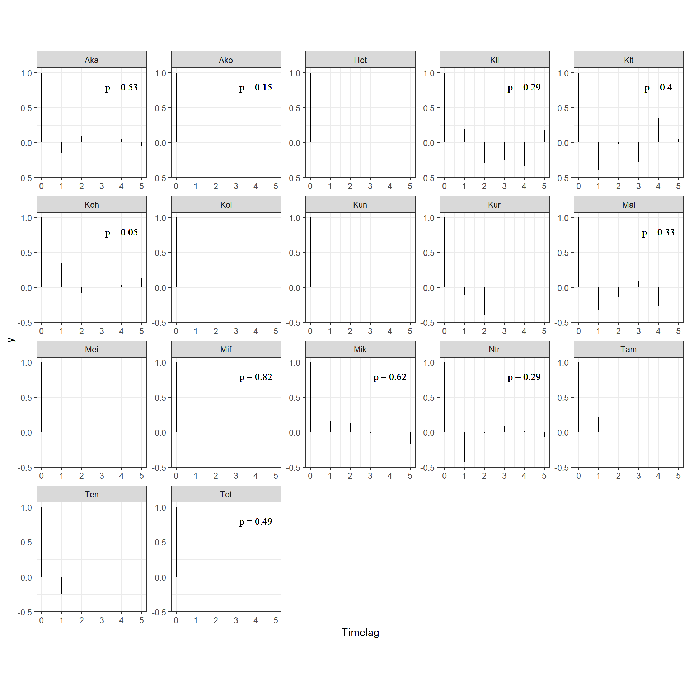

11 メスが群れに戻るときのメカニズム
本章では、メスが群れに戻るのはどのようなときなのかに関する分析を行う。以下では、メスの毎日の確認状況のデータからメスが群れに戻る要因を探る(図11.1)。

図11.1: メスの確認状況に影響する要因
11.1 データの加工
11.1.1 オスの出入り情報
まず、オスの出入り情報について変数を作成する。第9章と同様に、連続した2日間のオスの確認状況をもとにオスの動向について変数を作成する。
TYIT_presence_pre %>%
mutate(TY_state4 = ifelse(TY_pre == 1 & TY == 1, "TY_stay",
ifelse(TY_pre == 1 & TY == 0, "TY_out",
ifelse(TY_pre == 0 & TY == 1, "TY_return",
ifelse(TY_pre == 0 & TY == 0, "TY_absent", NA))))) %>%
mutate(TY_state4 = fct_relevel(TY_state4, "TY_stay", "TY_absent","TY_return")) %>%
mutate(IT_state4 = ifelse(IT_pre == 1 & IT == 1, "IT_stay",
ifelse(IT_pre == 1 & IT == 0, "IT_out",
ifelse(IT_pre == 0 & IT == 0, "IT_absent",
ifelse(IT_pre == 0 & IT == 1, "IT_return", NA))))) %>%
mutate(IT_state4 = fct_relevel(IT_state4, "IT_stay", "IT_absent","IT_return")) %>%
mutate(TY_state = ifelse(TY_pre == 0 & TY == 1, "TY_return",
ifelse(TY_pre == 0 & TY == 0, "TY_absent",
ifelse(TY_pre == 1, "TY_present", NA)))) %>%
mutate(TY_state = fct_relevel(TY_state, "TY_present", "TY_absent","TY_return")) %>%
mutate(IT_state = ifelse(IT_pre == 0 & IT == 1, "IT_return",
ifelse(IT_pre == 0 & IT == 0, "IT_absent",
ifelse(IT_pre == 1, "IT_present", NA)))) %>%
mutate(IT_state = fct_relevel(IT_state, "IT_present", "IT_absent","IT_return")) %>%
mutate(TY_return = ifelse(TY_state4 == "TY_return", 1, 0),
IT_return = ifelse(IT_state4 == "IT_return", 1, 0)) %>%
replace_na(list(IT_state4 = "IT_absent",
IT_state = "IT_absent",
IT_return = 0)) -> male_state11.1.2 メスが群れに戻った日の同定
続いて、各メスが群れに戻ったか否かを記したデータフレームを作成する。
## 発情状態とアカンボウの有無を結合
female_pre_long %>%
mutate(date_pre = date - 1) %>%
left_join(female_pre_long %>%
select(date, femaleID, presence) %>%
rename(presence_pre = presence),
by = c("date_pre" = "date", "femaleID")) %>%
mutate(female_in = ifelse(is.na(presence_pre), NA,
ifelse(presence_pre == 0 & presence == 1,1,0))) %>%
## 前日にメスがいない日のみを抽出
filter(presence_pre == 0) %>%
## オスの出入りがある期間のみを抽出
filter(study_period %in% c("m19", "m20", "m21", "nm20", "nm21")) %>%
left_join(female_all %>%
select(date,femaleID, rs2), by = c("date","femaleID")) -> female_in11.1.3 血縁個体が群れに戻ったか否か
続いて、各観察日に血縁個体が群れに戻ったか否かを算出する。
kin <- read_csv("../Data/data/others/kin.csv")
female_in %>%
select(groupID, date, study_period, femaleID, female_in, presence_pre) %>%
## 他のメスのデータを結合
left_join(att %>%
filter(age >= 6) %>%
select(study_period, femaleID) %>%
rename(femaleID2 = femaleID),
by = "study_period") %>%
filter(femaleID != femaleID2) %>%
## 他のメスが群れを離れたか否かの列を作成
left_join(female_in %>%
select(groupID, date, femaleID, female_in) %>%
rename(female_in2 = female_in,
femaleID2 = femaleID),
by = c("groupID","date", "femaleID2")) %>%
replace_na(list(female_in2 = 0)) %>%
## 相手のメスとの血縁度を結合
left_join(kin, by = c("femaleID", "femaleID2")) %>%
filter(female_in2 == 1) %>%
## それぞれの日で離れたメスの最大の血縁度を算出
group_by(groupID, date, femaleID) %>%
summarise(max_kin = max(kin),
## 血縁カテゴリーも作成する
kin_cat = as.character(max(kin))) %>%
mutate(kin_01 = ifelse(max_kin > 0, 1,0)) -> kin_female_in11.1.4 当日の確認メス割合、発情メス数
当日メスが群れに戻れば確認されたメスの割合も増加する可能性が高い。そこで、その日戻ったメスの数を除いたメス割合を算出した。
## それぞれの日に戻ったメスを除いた確認メス割合
prop_female <- female_in %>%
group_by(date) %>%
summarise(no_female_in = sum(female_in)) %>%
ungroup() %>%
right_join(no_female_over0.5) %>%
mutate(no_female_b = no_female - no_female_in) %>%
mutate(prop_female_b = no_female_b/max_female)
## まず、戻った個体のうち発情して他個体の数
sum_est_in <- female_in %>%
filter(presence == "1") %>%
group_by(date) %>%
summarise(no_est_in = sum(rs2))
## それらを除いた発情メス数を算出
sum_est_b <- sum_est %>%
left_join(sum_est_in, by = "date") %>%
replace_na(list(no_est_in = 0)) %>%
mutate(no_est_b = no_est - no_est_in)11.1.5 全データの結合
最後に、全データを結合する。
female_in %>%
left_join(no_female_over0.5 %>%
select(date, prop_female) %>%
rename(date_pre = date),
by = c("date_pre")) %>%
left_join(male_state %>% select(date, groupID, TY_state4, IT_state4, TY_state, IT_state, TY_return, IT_return),
by = c("date", "groupID")) %>%
left_join(CSI_TY %>%
rename(femaleID = subject) %>%
select(femaleID, CSI_TY),
by = "femaleID") %>%
left_join(CSI_IT %>%
rename(femaleID = subject) %>%
select(femaleID, CSI_IT),
by = "femaleID") %>%
left_join(no_female_over0.5_b %>%
select(date, TY, IT) %>%
mutate(date = date + 1) %>%
rename(TY_pre = TY,
IT_pre = IT)) %>%
left_join(kin_female_in,
by = c("groupID","date", "femaleID")) %>%
left_join(sum_ntm, by = c("date")) %>%
left_join(sum_est_b %>% select(date, groupID, no_est_b), by = c("date","groupID")) %>%
left_join(prop_female %>% select(date, groupID, prop_female_b),
by = c("date", "groupID")) %>%
replace_na(list(max_kin = 0,
kin_cat = "no")) %>%
mutate(kin_01 = ifelse(max_kin > 0, 1,0)) %>%
mutate(kin_cat = as.factor(kin_cat)) %>%
group_by(study_period) %>%
## 相対順位を算出
mutate(max_rank = max(rank)) %>%
ungroup() %>%
mutate(rank_scaled = rank/max_rank) -> female_in_finalデータはこちらの通り。
11.2 基本データの確認
TYとITはどのくらい同じ日に戻っていたかを確認する。
female_in_final %>%
mutate(season = ifelse(str_detect(study_period, "nm"), "nonmating", "mating")) %>%
group_by(femaleID, season) %>%
summarise(n = n(),
sum_in = sum(female_in))11.3 分析
以下では、交尾期と非交尾期に分けて分析を行う。分析に含まれるのは、6歳以上でかつTY、ITとのCSIが算出できる個体(= 2019年時点で6歳以上の個体)である。
11.3.1 交尾期
11.3.1.1 データの加工
まず、データの加工を行う。データ数が少ないのと、区別が難しいので発情/非発情は分けない。
female_in_m <- female_in_final %>%
filter(!str_detect(study_period, "nm")) %>%
drop_na(CSI_TY) %>%
mutate(date = as_date(date)) %>%
## 2019/9/27は発情のデータがないので除外
filter(date != "2019-09-27") %>%
mutate(CSI_TY_std = standardize(CSI_TY),
CSI_IT_std = standardize(CSI_IT),
ntm_std = standardize(no_ntm),
prop_std = standardize(prop_female_b),
est_std = standardize(no_est_b),
rank_std = standardize(rank_scaled),
age_std = standardize(age)) %>%
mutate(N = 1:n())TYとITの動向の組み合わせごとのN数は以下の通り。同じ日に戻ることはなかった。
戻ったメスの発情状態は以下の通り。だいたい2/3は非発情メス。
11.3.1.2 モデリング1
まず、TYとITが群れに戻ったか否かという2水準の変数を用いてモデリングを行う。モデルの詳細は以下のとおりである。なお、連続変数はすべて標準化している。
- 応答変数: メスが群れに戻ったか否か(\(female_in\))
- 説明変数: TYが群れに戻ったか(\(TY_return\))、TYとの親密度(\(CSI_TY\))、これらの交互作用、ITが群れに戻ったか(\(IT_return\))、ITとの親密度(\(CSI_IT\))、これらの交互作用、年齢(\(age_std\))、順位\(rank_std\)、当日の確認メス割合\(prop_std\)、当日の発情メス数\(est_std\)、当日の群れ外オス数\(ntm_std\)
- ランダム切片: メスID(\(femaleID\))、日付(\(date\))
- 分布: ベルヌーイ分布
モデルは以下のように実行する。
### ITとCSIの交互作用はVIFが高いので除く
m_female_in_m <- brm(data = female_in_m %>%
mutate(date = as.factor(date)),
female_in ~ TY_return*CSI_TY_std + IT_return*CSI_IT_std + kin_01 +
rank_std + age_std + ntm_std + prop_std + est_std +
study_period + (1|femaleID) + (1|date),
family = "bernoulli",
prior = c(prior(student_t(4,0,10),class = Intercept),
prior(student_t(4,0,10), class = b),
prior(student_t(4,0,5), class = sd)),
iter = 11000, warmup = 1000, seed = 112,
control=list(adapt_delta = 0.999, max_treedepth = 15),
backend = "cmdstanr",
file = "model/m_female_in_m")
## 2021年を除く
female_in_m_bf21 <- female_in_m %>%
filter(study_period != "m21") %>%
mutate(CSI_TY_std = standardize(CSI_TY),
CSI_IT_std = standardize(CSI_IT),
ntm_std = standardize(no_ntm),
prop_std = standardize(prop_female_b),
rank_std = standardize(rank_scaled),
age_std = standardize(age),
est_std = standardize(no_est_b))
## TYの動向とCSIの交互作用はVIFが高いので除外
m_female_in_m_bf21 <- brm(data = female_in_m_bf21 %>%
mutate(date = as.factor(date)),
female_in ~ TY_return*CSI_TY_std + IT_return*CSI_IT_std + kin_01 +
rank_std + age_std + ntm_std + prop_std + est_std +
study_period + (1|femaleID) + (1|date),
family = "bernoulli",
prior = c(prior(student_t(4,0,10),class = Intercept),
prior(student_t(4,0,10), class = b),
prior(student_t(4,0,5), class = sd)),
iter = 11000, warmup = 1000, seed = 124,
control=list(adapt_delta = 0.999, max_treedepth = 15),
backend = "cmdstanr",
file = "model/m_female_in_m_bf21")11.3.1.2.1 モデルチェック
まず、DHARMaパッケージ(Hartig, 2022)とDHARMa.helperパッケージ(Rodríguez-Sánchez, 2023)でモデルの前提が満たされているかを確認する。特に問題はないよう。


bayesplotパッケージ(Gabry & Mahr, 2022)のpp_check関数で、事後分布からの予測分布と実測値の分布を比較しても大きな乖離はない。

多重共線性のチェックもお個あったが、VIFに問題はない。
最後に残差の時系列相関のチェックを行う。
まず、全期間のデータを用いたモデルについて。残差の自己相関をプロットすると、明確なパターンは見られなかった。また、Ljung-Box検定で3時点前までの残差との自己相関を検定したところ、有意な自己相関を示したのはAkaとTotだけだった。
res_female_in_m <- female_in_m %>%
mutate(resid = dh_female_in_m$scaledResiduals) %>%
mutate(date = as_date(date)) %>%
group_by(femaleID) %>%
complete(date = seq.Date(min(date), max(date), by = "1 day")) %>%
ungroup()
females <- unique(female_in_m$femaleID)
acf_female_in_m <- NULL
for(i in seq_along(females)){
data <- res_female_in_m %>%
filter(femaleID == females[i])
out.acf <- acf(data$resid,
lag.max = 5,
na.action = na.pass,
plot = F)
box_test <- Box.test(data$resid, type = "Ljung-Box", lag = 3)
out.df <- data.frame(Timelag = out.acf$lag,
Acf = out.acf$acf,
femaleID = females[i],
p = box_test$p.value)
acf_female_in_m <- bind_rows(acf_female_in_m, out.df)
}
acf_female_in_m %>%
mutate(p = str_c("p = ",round(p,2))) %>%
ggplot(aes(x = Timelag,
y = 0))+
geom_segment(aes(xend = Timelag,
yend = Acf))+
geom_text(aes(x = 4, y = 0.8,
label = p),
size = 3.5,
family = "Times New Roman")+
theme_bw()+
theme(aspect.ratio = 1)+
facet_rep_wrap(~femaleID,
repeat.tick.labels = TRUE)
続いて、2021年交尾期以後を除いたモデルでも同様の分析を行う。有意な自己相関を示した個体はいなかった。
res_female_in_m_bf21 <- female_in_m_bf21 %>%
mutate(resid = dh_female_in_m_bf21$scaledResiduals) %>%
mutate(date = as_date(date)) %>%
group_by(femaleID) %>%
complete(date = seq.Date(min(date), max(date), by = "1 day")) %>%
ungroup()
females <- unique(female_in_m_bf21$femaleID)
acf_female_in_m_bf21 <- NULL
for(i in seq_along(females)){
data <- res_female_in_m_bf21 %>%
filter(femaleID == females[i])
out.acf <- acf(data$resid,
lag.max = 5,
na.action = na.pass,
plot = F)
box_test <- Box.test(data$resid, type = "Ljung-Box", lag = 3)
out.df <- data.frame(Timelag = out.acf$lag,
Acf = out.acf$acf,
femaleID = females[i],
p = box_test$p.value)
acf_female_in_m_bf21 <- bind_rows(acf_female_in_m_bf21, out.df)
}
acf_female_in_m_bf21 %>%
mutate(p = str_c("p = ",round(p,2))) %>%
ggplot(aes(x = Timelag,
y = 0))+
geom_segment(aes(xend = Timelag,
yend = Acf))+
geom_text(aes(x = 4, y = 0.8,
label = p),
size = 3.5,
family = "Times New Roman")+
theme_bw()+
theme(aspect.ratio = 1)+
facet_rep_wrap(~femaleID,
repeat.tick.labels = TRUE)
11.3.1.2.2 結果の確認
まずは全期間のデータを用いたモデルについて。結果は以下の通り。
Explanatory variables | Median | MAD | 95%CI | PD | Rhat | ESS |
|---|---|---|---|---|---|---|
切片 | -3.19 | 1.00 | [-5.58,-1.35] | 99.91% | 1.00 | 9,375.05 |
TYが戻ったか(vs 否) | 1.21 | 1.88 | [-2.83,5.04] | 73.71% | 1.00 | 15,490.10 |
TYとの親密度(CSI) | -0.59 | 0.42 | [-1.59,0.25] | 91.97% | 1.00 | 14,206.75 |
TYが戻ったか(vs 否) | 2.95 | 1.44 | [0.45,6.41] | 99.02% | 1.00 | 14,241.34 |
ITが戻ったか(vs 否) | 4.31 | 2.00 | [0.73,9.02] | 99.04% | 1.00 | 13,764.21 |
ITとの親密度(CSI) | -1.04 | 0.46 | [-2.22,-0.04] | 97.75% | 1.00 | 11,162.71 |
ITが戻ったか(vs 否) | 0.11 | 1.34 | [-2.99,2.62] | 53.21% | 1.00 | 25,048.27 |
血縁のメスが群れに戻ったか | 2.13 | 0.66 | [0.81,3.43] | 99.91% | 1.00 | 22,549.91 |
当日の群れ外オス数 | 0.16 | 0.56 | [-0.96,1.38] | 61.29% | 1.00 | 11,001.80 |
当日の発情メス数 | 0.83 | 0.44 | [0.03,1.86] | 97.92% | 1.00 | 9,601.38 |
順位 | -0.83 | 0.32 | [-1.61,-0.17] | 98.97% | 1.00 | 11,044.05 |
年齢 | -0.57 | 0.39 | [-1.44,0.24] | 92.45% | 1.00 | 16,051.66 |
当日確認したメスの割合 | 0.94 | 0.50 | [0.00,2.05] | 97.51% | 1.00 | 10,730.20 |
調査期間(m20 vs m19) | 0.14 | 1.32 | [-2.52,3.01] | 54.09% | 1.00 | 10,569.73 |
調査期間(m21 vs m19) | -0.04 | 1.19 | [-2.62,2.33] | 51.50% | 1.00 | 11,753.53 |
## [1] "tables/table_female_in_m.tiff"続いて、2021年交尾期以後を除いたモデルの結果は以下の通り。
Explanatory variables | Median | MAD | 95%CI | PD | Rhat | ESS |
|---|---|---|---|---|---|---|
切片 | -3.76 | 2.11 | [-8.96,0.07] | 97.28% | 1.00 | 12,505.48 |
TYが戻ったか(vs 否) | 3.48 | 3.52 | [-3.54,11.50] | 84.60% | 1.00 | 18,420.60 |
TYとの親密度(CSI) | -0.60 | 0.70 | [-2.39,0.90] | 80.62% | 1.00 | 16,552.70 |
TYが戻ったか(vs 否) | 5.60 | 3.07 | [0.49,13.48] | 98.46% | 1.00 | 17,319.35 |
ITが戻ったか(vs 否) | 7.08 | 3.54 | [0.91,15.87] | 98.76% | 1.00 | 16,400.15 |
ITとの親密度(CSI) | -1.02 | 0.82 | [-3.27,1.01] | 89.06% | 1.00 | 17,208.74 |
ITが戻ったか(vs 否) | -0.23 | 1.96 | [-5.39,3.69] | 54.78% | 1.00 | 27,016.49 |
血縁のメスが群れに戻ったか | 0.60 | 1.04 | [-1.55,2.59] | 71.44% | 1.00 | 24,312.37 |
当日の群れ外オス数 | -1.71 | 1.67 | [-5.70,1.43] | 85.97% | 1.00 | 11,389.41 |
当日の発情メス数 | 0.92 | 1.59 | [-2.24,4.80] | 72.54% | 1.00 | 12,603.85 |
順位 | -0.68 | 0.58 | [-2.26,0.78] | 87.15% | 1.00 | 15,509.13 |
年齢 | -0.38 | 0.63 | [-1.87,1.13] | 72.88% | 1.00 | 20,629.35 |
当日確認したメスの割合 | 1.26 | 1.02 | [-0.80,3.71] | 89.54% | 1.00 | 14,207.90 |
調査期間(m20 vs m19) | -2.13 | 2.68 | [-8.08,3.39] | 79.17% | 1.00 | 13,904.63 |
11.3.1.2.3 結果の図示
11.3.1.2.3.1 TYの動向・ CSIとメスに戻る確率の関連
まずは、estimate_contrasts関数を用いて、TYとのCSIに応じてオッズ比の対数をとったものがどのように変わるかを図示する。TYと親密度が高いメスは同じ日に群れに戻る確率が高いことが分かる。
cont_female_in_m <- estimate_contrasts(m_female_in_m,
contrast = "TY_return = c(0,1)",
at = "CSI_TY_std",
length = 50)
cont_female_in_m %>%
rename(Level1 = Level2, Level2 = Level1) %>%
mutate(Difference = -Difference) %>%
data.frame() %>%
rename(CSI_TY = CSI_TY_std) %>%
mutate(CSI_TY = sd(female_in_m$CSI_TY)*CSI_TY + mean(female_in_m$CSI_TY)) %>%
ggplot(aes(x = CSI_TY, y = Difference)) +
geom_hline(aes(yintercept = 0),
linetype = "dashed",
color = "grey30",
linewidth = 1)+
geom_segment(data = CSI_TY,
aes(xend = CSI_TY, y=-2, yend = 0),
color = "firebrick3",
alpha = 0.8, size = 0.6,
arrow = arrow(length = unit(8, "points"))) +
geom_line()+
geom_ribbon(aes(ymin = -CI_low, ymax = -CI_high),
alpha = 0.2)+
theme_bw(base_size = 18)+
theme(aspect.ratio = 1) +
labs(y = "Log odds ratio", x = expression(paste("CSI with ",italic("TY")))) +
scale_x_continuous(breaks = seq(0,3.5,0.5))+
theme(axis.title.y = element_text(family = "Times New Roman"),
axis.title.x = element_text(family = "Times New Roman",
size = 15),
axis.text.x = element_text(family = "Times New Roman",
size = 12),
axis.text.y = element_text(family = "Times New Roman"),
aspect.ratio = 1,
strip.background = element_blank(),
strip.text = element_text(hjust = 0))+
scale_y_continuous(breaks = seq(-20,20,2)) -> p_female_in_m_TYcsi
p_female_in_m_TYcsi# ggsave("figures/p_female_in_m_TYcsi.png",
# p_female_in_m_TYcsi, dpi = 900, units = "mm",
# width = 100, height = 100)11.3.1.2.3.2 ITの動向・ CSIとメスに戻る確率の関連
続いて、ITとのCSIに応じてオッズ比の対数をとったものがどのように変わるかを図示する。
cont_female_in_m_IT <- estimate_contrasts(m_female_in_m,
contrast = "IT_return = c(0,1)",
at = "CSI_IT_std",
length = 50)
cont_female_in_m_IT %>%
rename(Level1 = Level2, Level2 = Level1) %>%
mutate(Difference = -Difference) %>%
data.frame() %>%
rename(CSI_IT = CSI_IT_std) %>%
mutate(CSI_IT = sd(female_in_m$CSI_IT)*CSI_IT + mean(female_in_m$CSI_IT)) %>%
ggplot(aes(x = CSI_IT, y = Difference)) +
geom_hline(aes(yintercept = 0),
linetype = "dashed",
color = "grey30",
linewidth = 1)+
geom_segment(data = CSI_IT,
aes(xend = CSI_IT, y=-1.1, yend = 0),
color = "firebrick3",
alpha = 0.8, size = 0.6,
arrow = arrow(length = unit(8, "points"))) +
geom_line()+
geom_ribbon(aes(ymin = -CI_low, ymax = -CI_high),
alpha = 0.2)+
theme_bw(base_size = 18)+
theme(aspect.ratio = 1) +
labs(y = "Log odds ratio", x = expression(paste("CSI with ",italic("IT")))) +
scale_x_continuous(breaks = seq(0,7,0.5))+
theme(axis.title.y = element_text(family = "Times New Roman"),
axis.title.x = element_text(family = "Times New Roman",
size = 15),
axis.text.x = element_text(family = "Times New Roman",
size = 12),
axis.text.y = element_text(family = "Times New Roman"),
aspect.ratio = 1,
strip.background = element_blank(),
strip.text = element_text(hjust = 0))+
scale_y_continuous(breaks = seq(-40,100,2)) -> p_female_in_m_ITcsi
p_female_in_m_ITcsi# ggsave("figures/p_female_in_m_ITcsi.png",
# p_female_in_m_ITcsi, dpi = 900, units = "mm",
# width = 100, height = 100)2021年の交尾期を除いたモデルの結果は以下のとおりである。
cont_female_in_m_IT_bf21 <- estimate_contrasts(m_female_in_m_bf21,
contrast = "IT_return = c(0,1)",
at = "CSI_IT_std",
length = 50)
cont_female_in_m_IT_bf21 %>%
rename(Level1 = Level2, Level2 = Level1) %>%
mutate(Difference = -Difference) %>%
data.frame() %>%
rename(CSI_IT = CSI_IT_std) %>%
mutate(CSI_IT = sd(female_in_m_bf21$CSI_IT)*CSI_IT + mean(female_in_m_bf21$CSI_IT)) %>%
ggplot(aes(x = CSI_IT, y = Difference)) +
geom_hline(aes(yintercept = 0),
linetype = "dashed",
color = "grey30",
linewidth = 1)+
geom_segment(data = CSI_IT,
aes(xend = CSI_IT, y=-1.7, yend = 0),
color = "firebrick3",
alpha = 0.8, size = 0.6,
arrow = arrow(length = unit(8, "points"))) +
geom_line()+
geom_ribbon(aes(ymin = -CI_low, ymax = -CI_high),
alpha = 0.2)+
theme_bw(base_size = 18)+
theme(aspect.ratio = 1) +
labs(y = "Log odds ratio", x = expression(paste("CSI with ",italic("IT")))) +
scale_x_continuous(breaks = seq(0,7,0.5))+
theme(axis.title.y = element_text(family = "Times New Roman"),
axis.title.x = element_text(family = "Times New Roman",
size = 15),
axis.text.x = element_text(family = "Times New Roman",
size = 12),
axis.text.y = element_text(family = "Times New Roman"),
aspect.ratio = 1,
strip.background = element_blank(),
strip.text = element_text(hjust = 0))+
scale_y_continuous(breaks = seq(-40,100,2)) -> p_female_in_m_ITcsi_bf21
p_female_in_m_ITcsi_bf21# ggsave("figures/p_female_in_m_ITcsi_bf21.png",
# p_female_in_m_ITcsi_bf21, dpi = 900, units = "mm",
# width = 100, height = 100)11.3.1.2.3.3 メス同士の血縁度との関連
続いて、血縁のメスと同じ日に群れに戻る確率を図示する。図示には、少なくとも機会が3回以上あった個体のデータのみを用いている。
female_in_m %>%
mutate(kin_01 = as.factor(kin_01)) %>%
group_by(kin_01, femaleID) %>%
summarise(prop = mean(female_in),
n = n()) %>%
ungroup() %>%
filter(n >= 3) %>%
ggplot(aes(x = kin_01, y = prop))+
geom_count(alpha = 0.5)+
geom_line(aes(group = femaleID))+
scale_size(range = c(2,8))+
theme_bw(base_size = 13)+
labs(x = "If kin females returned the group",
y = "Probability of returning to main group",
color = "Study period",
fill = "Study period")+
coord_cartesian(xlim = c(1.2,1.7),
ylim = c(0,1.15))+
scale_x_discrete(labels = c("No", "Yes")) +
scale_y_continuous(breaks = seq(0,1,0.2)) +
theme(axis.title.y = element_text(family = "Times New Roman",
size = 12),
axis.title.x = element_text(family = "Times New Roman", size =12),
axis.text = element_text(family = "Times New Roman",
size = 12),
legend.title = element_text(family = "Times New Roman"),
legend.text = element_text(family = "Times New Roman"),
aspect.ratio = 0.9) +
geom_signif(xmin = 1, xmax = 2,
y_position = 1.1, annotation = "***",
vjust = 0.01,
textsize = 5) -> p_female_in_kin
p_female_in_kin
11.3.1.3 モデリング2
11.3.1.3.1 データの加工
続いて、TYとITの動向をより細かくして調べてみる(図11.2)。
図11.2: 3つに分けたオスの動向
このとき、各オスの動向の組み合わせごとのデータ数は以下の通り。
それぞれの動向ごとのデータ数は以下の通り。
##
## TY_present TY_absent TY_return
## 103 292 20##
## IT_present IT_absent IT_return
## 42 357 1611.3.1.3.2 モデリング
モデルは以下のように実行する。
### ITとCSIの交互作用はVIFが高いので除く
m_female_in_m_TYstate <- brm(data = female_in_m %>%
mutate(date = as.factor(date)),
female_in ~ TY_state*CSI_TY_std + IT_state + CSI_IT_std + kin_01 +
rank_std + age_std + ntm_std + est_std + prop_std +
study_period + (1|femaleID) + (1|date),
family = "bernoulli",
prior = c(prior(student_t(4,0,10),class = Intercept),
prior(student_t(4,0,10), class = b),
prior(student_t(4,0,5), class = sd)),
iter = 11000, warmup = 1000, seed = 123,
control=list(adapt_delta = 0.999, max_treedepth = 15),
backend = "cmdstanr",
file = "model/m_female_in_m_TYstate")
## TYの動向とCSIの交互作用、ITの動向とCSIの交互作用はVIFが高いので除外
m_female_in_m_TYstate_bf21 <- brm(data = female_in_m_bf21 %>%
mutate(date = as.factor(date)),
female_in ~ TY_state + CSI_TY_std + IT_state + CSI_IT_std + kin_01 +
rank_std + age_std + ntm_std + prop_std + est_std +
study_period + (1|femaleID) + (1|date),
family = "bernoulli",
prior = c(prior(student_t(4,0,10),class = Intercept),
prior(student_t(4,0,10), class = b),
prior(student_t(4,0,5), class = sd)),
iter = 11000, warmup = 1000, seed = 124,
control=list(adapt_delta = 0.999, max_treedepth = 15),
backend = "cmdstanr",
file = "model/m_female_in_m_TYstate_bf21")11.3.1.3.3 モデルチェック
まず、DHARMaパッケージ(Hartig, 2022)とDHARMa.helperパッケージ(Rodríguez-Sánchez, 2023)でモデルの前提が満たされているかを確認する。特に問題はないよう。
## 2021年交尾期以後を除く
dh_female_in_m_TYstate_bf21 <- dh_check_brms(m_female_in_m_TYstate_bf21, quantreg = TRUE)
bayesplotパッケージ(Gabry & Mahr, 2022)のpp_check関数で、事後分布からの予測分布と実測値の分布を比較しても大きな乖離はない。

## 2021交尾期以後を除く
pp_check(m_female_in_m_TYstate_bf21, ndraws = 100)+
theme_bw()+
theme(aspect.ratio = 0.9)
多重共線性のチェックも行ったが、VIFに問題はない。
最後に残差の時系列相関のチェックを行う。
まず、全期間のデータを用いたモデルについて。残差の自己相関をプロットすると、明確なパターンは見られなかった。また、Ljung-Box検定で3時点前までの残差との自己相関を検定したところ、有意な自己相関を示したのはAkaとTotだけだった。
res_female_in_m_TYstate <- female_in_m %>%
mutate(resid = dh_female_in_m_TYstate$scaledResiduals) %>%
mutate(date = as_date(date)) %>%
group_by(femaleID) %>%
complete(date = seq.Date(min(date), max(date), by = "1 day")) %>%
ungroup()
females <- unique(female_in_m$femaleID)
acf_female_in_m_TYstate <- NULL
for(i in seq_along(females)){
data <- res_female_in_m_TYstate %>%
filter(femaleID == females[i])
out.acf <- acf(data$resid,
lag.max = 5,
na.action = na.pass,
plot = F)
box_test <- Box.test(data$resid, type = "Ljung-Box", lag = 3)
out.df <- data.frame(Timelag = out.acf$lag,
Acf = out.acf$acf,
femaleID = females[i],
p = box_test$p.value)
acf_female_in_m_TYstate <- bind_rows(acf_female_in_m_TYstate, out.df)
}
acf_female_in_m_TYstate %>%
mutate(p = str_c("p = ",round(p,2))) %>%
ggplot(aes(x = Timelag,
y = 0))+
geom_segment(aes(xend = Timelag,
yend = Acf))+
geom_text(aes(x = 4, y = 0.8,
label = p),
size = 3.5,
family = "Times New Roman")+
theme_bw()+
theme(aspect.ratio = 1)+
facet_rep_wrap(~femaleID,
repeat.tick.labels = TRUE)
続いて、2021年交尾期以後を除いたモデルでも同様の分析を行う。有意な自己相関を示した個体はいなかった。
res_female_in_m_TYstate_bf21 <- female_in_m_bf21 %>%
mutate(resid = dh_female_in_m_TYstate_bf21$scaledResiduals) %>%
mutate(date = as_date(date)) %>%
group_by(femaleID) %>%
complete(date = seq.Date(min(date), max(date), by = "1 day")) %>%
ungroup()
females <- unique(female_in_m_bf21$femaleID)
acf_female_in_m_TYstate_bf21 <- NULL
for(i in seq_along(females)){
data <- res_female_in_m_bf21 %>%
filter(femaleID == females[i])
out.acf <- acf(data$resid,
lag.max = 5,
na.action = na.pass,
plot = F)
box_test <- Box.test(data$resid, type = "Ljung-Box", lag = 3)
out.df <- data.frame(Timelag = out.acf$lag,
Acf = out.acf$acf,
femaleID = females[i],
p = box_test$p.value)
acf_female_in_m_TYstate_bf21 <- bind_rows(acf_female_in_m_TYstate_bf21, out.df)
}
acf_female_in_m_TYstate_bf21 %>%
mutate(p = str_c("p = ",round(p,2))) %>%
ggplot(aes(x = Timelag,
y = 0))+
geom_segment(aes(xend = Timelag,
yend = Acf))+
geom_text(aes(x = 4, y = 0.8,
label = p),
size = 3.5,
family = "Times New Roman")+
theme_bw()+
theme(aspect.ratio = 1)+
facet_rep_wrap(~femaleID,
repeat.tick.labels = TRUE)
11.3.1.3.4 結果の確認
11.3.1.3.4.1 推定された係数
まずは全期間のデータを用いたモデルについて。結果は以下の通り。
Explanatory variables | Median | MAD | 95%CI | PD | Rhat | ESS |
|---|---|---|---|---|---|---|
切片 | 0.66 | 1.60 | [-2.50,4.13] | 66.01% | 1.00 | 18,998.73 |
TY(absent vs present) | -1.38 | 0.98 | [-3.58,0.55] | 92.12% | 1.00 | 19,267.03 |
TY(return vs present) | 0.20 | 2.11 | [-4.46,4.39] | 53.80% | 1.00 | 24,101.17 |
TYとの親密度(CSI) | -0.78 | 0.62 | [-2.08,0.45] | 89.30% | 1.00 | 21,246.27 |
TY(absent vs present) | 0.43 | 0.63 | [-0.80,1.68] | 75.27% | 1.00 | 26,557.24 |
TY(return vs present) | 3.46 | 1.63 | [0.66,7.43] | 99.34% | 1.00 | 19,489.22 |
IT(absent vs present) | -3.87 | 1.42 | [-7.24,-1.40] | 99.89% | 1.00 | 12,749.07 |
IT(return vs present) | 1.58 | 2.07 | [-2.43,6.26] | 78.47% | 1.00 | 23,119.99 |
ITとの親密度(CSI) | -0.87 | 0.43 | [-1.92,0.07] | 96.88% | 1.00 | 21,403.60 |
血縁のメスが群れに戻ったか | 2.03 | 0.68 | [0.68,3.37] | 99.78% | 1.00 | 30,172.05 |
当日の群れ外オス数 | 0.74 | 0.62 | [-0.43,2.14] | 89.51% | 1.00 | 15,636.40 |
当日の発情メス数 | 0.70 | 0.45 | [-0.13,1.75] | 95.13% | 1.00 | 16,602.83 |
当日確認したメスの割合 | 0.42 | 0.50 | [-0.60,1.49] | 80.09% | 1.00 | 18,703.87 |
順位 | -0.84 | 0.31 | [-1.56,-0.21] | 99.16% | 1.00 | 19,865.37 |
年齢 | -0.70 | 0.39 | [-1.56,0.07] | 96.50% | 1.00 | 28,216.49 |
調査期間(m20 vs m19) | 0.64 | 1.33 | [-2.02,3.55] | 68.77% | 1.00 | 17,636.37 |
調査期間(m21 vs m19) | 0.64 | 1.24 | [-1.96,3.26] | 69.59% | 1.00 | 19,007.54 |
## [1] "tables/table_female_in_m.tiff"続いて、2021年交尾期以後を除いたモデルの結果は以下の通り。
Explanatory variables | Median | MAD | 95%CI | PD | Rhat | ESS |
|---|---|---|---|---|---|---|
切片 | 0.67 | 3.25 | [-6.31,7.89] | 58.30% | 1.00 | 14,244.13 |
TY(absent vs present) | -1.34 | 2.33 | [-6.75,3.40] | 72.34% | 1.00 | 14,916.85 |
TY(return vs present) | 5.79 | 3.61 | [-0.84,14.69] | 95.79% | 1.00 | 15,023.93 |
TYとの親密度(CSI) | -0.45 | 0.69 | [-2.21,1.04] | 74.89% | 1.00 | 18,831.97 |
IT(absent vs present) | -4.90 | 2.63 | [-11.34,-0.28] | 98.12% | 1.00 | 11,351.31 |
IT(return vs present) | 4.27 | 3.80 | [-2.88,13.34] | 88.29% | 1.00 | 19,298.22 |
ITとの親密度(CSI) | -0.93 | 0.82 | [-3.26,1.01] | 87.52% | 1.00 | 16,586.88 |
血縁のメスが群れに戻ったか | 0.48 | 1.03 | [-1.67,2.46] | 67.89% | 1.00 | 27,975.60 |
当日の群れ外オス数 | -1.07 | 1.71 | [-5.04,2.37] | 74.43% | 1.00 | 12,307.21 |
当日の発情メス数 | 1.37 | 1.72 | [-1.93,5.61] | 79.96% | 1.00 | 13,576.04 |
当日確認したメスの割合 | 0.67 | 1.12 | [-1.66,3.18] | 72.88% | 1.00 | 13,450.07 |
順位 | -0.65 | 0.58 | [-2.21,0.83] | 86.11% | 1.00 | 14,575.04 |
年齢 | -0.39 | 0.62 | [-1.83,1.13] | 73.30% | 1.00 | 19,243.01 |
調査期間(m20 vs m19) | -1.47 | 2.82 | [-7.76,4.52] | 70.31% | 1.00 | 14,152.08 |
11.3.1.3.5 結果の図示
11.3.1.3.5.1 TYの動向・ CSIとメスに戻る確率の関連
まずは、estimate_contrasts関数を用いて、TYとのCSIに応じてオッズ比の対数をとったものがどのように変わるかを図示する。TYと親密度が高いメスは同じ日に群れに戻る確率が高いことが分かる。
# cont_female_in_m_TYstate <- estimate_contrasts(m_female_in_m_TYstate,
# contrast = "TY_state",
# at = "CSI_TY_std",
# length = 50)
#
# saveRDS(cont_female_in_m_TYstate, "model/cont_female_in_m_TYstate.rds")
cont_female_in_m_TYstate <- readRDS("model/cont_female_in_m_TYstate.rds")
cont_female_in_m_TYstate %>%
mutate(type = str_c(Level2, " vs ", Level1)) %>%
mutate(type = str_replace_all(type, "TY_", "")) %>%
mutate(type = fct_relevel(type, "absent vs present",
"return vs absent", "return vs present")) %>%
rename(CSI_TY = CSI_TY_std) %>%
mutate(CSI_TY = sd(female_in_m$CSI_TY)*CSI_TY + mean(female_in_m$CSI_TY)) %>%
ggplot(aes(x = CSI_TY, y = -Difference)) +
geom_hline(aes(yintercept = 0),
linetype = "dashed",
color = "grey30",
linewidth = 0.7)+
geom_segment(data = CSI_TY %>%
expand(data.frame(type = c("absent vs present",
"return vs absent",
"return vs present")) %>%
mutate(type = fct_relevel(type,
"absent vs present",
"return vs absent",
"return vs present")),
nesting(subject, CSI_TY)) %>%
mutate(y = c(rep(-0.5,18),
rep(-1.8, 18),
rep(-2,18))),
aes(xend = CSI_TY, y= y, yend = -0.02),
color = "firebrick3",
alpha = 0.8, size = 0.4,
arrow = arrow(length = unit(9, "points"))) +
geom_line(aes(group = type))+
geom_ribbon(aes(ymin = -CI_low, ymax = -CI_high,
group = type),
alpha = 0.2)+
theme_bw(base_size = 18)+
theme(aspect.ratio = 1) +
labs(y = "Log odds ratio", x = expression(paste("CSI with ",italic("TY")))) +
scale_x_continuous(breaks = seq(0,3.5,0.5))+
theme(axis.title.y = element_text(family = "Times New Roman"),
axis.title.x = element_text(family = "Times New Roman",
size = 15),
axis.text.x = element_text(family = "Times New Roman",
size = 12),
axis.text.y = element_text(family = "Times New Roman"),
aspect.ratio = 1,
strip.background = element_blank(),
strip.text = element_text(hjust = 0))+
scale_y_continuous(breaks = seq(-20,20,2))+
facet_rep_wrap(~type,
repeat.tick.labels = TRUE,
scales = "free_y") -> p_female_in_m_TYstate_TYcsi
p_female_in_m_TYstate_TYcsi
# ggsave("figures/p_female_in_m_TYstate_TYcsi.png",
# p_female_in_m_TYstate_TYcsi, dpi = 900, units = "mm",
# width = 280, height = 100)
#
# ggsave("figures/p_female_in_m_TYstate_TYcsi_noarrow.png",
# p_female_in_m_TYstate_TYcsi, dpi = 900, units = "mm",
# width = 280, height = 100)11.3.1.4 モデリング3
11.3.1.4.1 データの加工
最後に、TYとITの動向を4つに分けて調べてみる(return、absent、leave、stay)。
このとき、各オスの動向の組み合わせごとのデータ数は以下の通り。
それぞれの動向ごとのデータ数は以下の通り。
##
## TY_stay TY_absent TY_return TY_out
## 85 292 20 18##
## IT_stay IT_absent IT_return IT_out
## 31 357 16 1111.3.1.4.2 モデリング
モデルは以下のように実行する。
### ITとCSIの交互作用はVIFが高いので除く
m_female_in_m_TYcat4 <- brm(data = female_in_m %>%
mutate(date = as.factor(date)),
female_in ~ TY_state4*CSI_TY_std + IT_state4 + CSI_IT_std + kin_01 +
rank_std + age_std + ntm_std + est_std + prop_std +
study_period + (1|femaleID) + (1|date),
family = "bernoulli",
prior = c(prior(student_t(4,0,10),class = Intercept),
prior(student_t(4,0,10), class = b),
prior(student_t(4,0,5), class = sd)),
iter = 11000, warmup = 1000, seed = 123,
control=list(adapt_delta = 0.999, max_treedepth = 15),
backend = "cmdstanr",
file = "model/m_female_in_m_TY4cat")
## TYの動向とCSIの交互作用もVIFが高いので除外
m_female_in_m_TYcat4_bf21 <- brm(data = female_in_m_bf21 %>%
mutate(date = as.factor(date)),
female_in ~ TY_state4 + CSI_TY_std + IT_state4 + CSI_IT_std + kin_01 +
rank_std + age_std + ntm_std + prop_std + est_std +
study_period + (1|femaleID) + (1|date),
family = "bernoulli",
prior = c(prior(student_t(4,0,10),class = Intercept),
prior(student_t(4,0,10), class = b),
prior(student_t(4,0,5), class = sd)),
iter = 11000, warmup = 1000, seed = 124,
control=list(adapt_delta = 0.999, max_treedepth = 15),
backend = "cmdstanr",
file = "model/m_female_in_m_TY4cat_bf21")11.3.1.4.3 モデルチェック
まず、DHARMaパッケージ(Hartig, 2022)とDHARMa.helperパッケージ(Rodríguez-Sánchez, 2023)でモデルの前提が満たされているかを確認する。特に問題はないよう。

## 2021年交尾期以後を除く
dh_female_in_m_TYcat4_bf21 <- dh_check_brms(m_female_in_m_TYcat4_bf21, quantreg = TRUE)
bayesplotパッケージ(Gabry & Mahr, 2022)のpp_check関数で、事後分布からの予測分布と実測値の分布を比較しても大きな乖離はない。
## 2021交尾期以後を除く
pp_check(m_female_in_m_TYcat4_bf21, ndraws = 100)+
theme_bw()+
theme(aspect.ratio = 0.9)
多重共線性のチェックもお個あったが、VIFに問題はない。
最後に残差の時系列相関のチェックを行う。
まず、全期間のデータを用いたモデルについて。残差の自己相関をプロットすると、明確なパターンは見られなかった。また、Ljung-Box検定で3時点前までの残差との自己相関を検定したところ、有意な自己相関を示したのはAkaとTotだけだった。
res_female_in_m_TYcat4 <- female_in_m %>%
mutate(resid = dh_female_in_m_TYcat4$scaledResiduals) %>%
mutate(date = as_date(date)) %>%
group_by(femaleID) %>%
complete(date = seq.Date(min(date), max(date), by = "1 day")) %>%
ungroup()
females <- unique(female_in_m$femaleID)
acf_female_in_m_TYcat4 <- NULL
for(i in seq_along(females)){
data <- res_female_in_m_TYcat4 %>%
filter(femaleID == females[i])
out.acf <- acf(data$resid,
lag.max = 5,
na.action = na.pass,
plot = F)
box_test <- Box.test(data$resid, type = "Ljung-Box", lag = 3)
out.df <- data.frame(Timelag = out.acf$lag,
Acf = out.acf$acf,
femaleID = females[i],
p = box_test$p.value)
acf_female_in_m_TYcat4 <- bind_rows(acf_female_in_m_TYcat4, out.df)
}
acf_female_in_m_TYcat4 %>%
mutate(p = str_c("p = ",round(p,2))) %>%
ggplot(aes(x = Timelag,
y = 0))+
geom_segment(aes(xend = Timelag,
yend = Acf))+
geom_text(aes(x = 4, y = 0.8,
label = p),
size = 3.5,
family = "Times New Roman")+
theme_bw()+
theme(aspect.ratio = 1)+
facet_rep_wrap(~femaleID,
repeat.tick.labels = TRUE)
続いて、2021年交尾期以後を除いたモデルでも同様の分析を行う。有意な自己相関を示した個体はいなかった。
res_female_in_m_TYcat4_bf21 <- female_in_m_bf21 %>%
mutate(resid = dh_female_in_m_TYcat4_bf21$scaledResiduals) %>%
mutate(date = as_date(date)) %>%
group_by(femaleID) %>%
complete(date = seq.Date(min(date), max(date), by = "1 day")) %>%
ungroup()
females <- unique(female_in_m_bf21$femaleID)
acf_female_in_m_TYcat4_bf21 <- NULL
for(i in seq_along(females)){
data <- res_female_in_m_bf21 %>%
filter(femaleID == females[i])
out.acf <- acf(data$resid,
lag.max = 5,
na.action = na.pass,
plot = F)
box_test <- Box.test(data$resid, type = "Ljung-Box", lag = 3)
out.df <- data.frame(Timelag = out.acf$lag,
Acf = out.acf$acf,
femaleID = females[i],
p = box_test$p.value)
acf_female_in_m_TYcat4_bf21 <- bind_rows(acf_female_in_m_TYcat4_bf21, out.df)
}
acf_female_in_m_TYcat4_bf21 %>%
mutate(p = str_c("p = ",round(p,2))) %>%
ggplot(aes(x = Timelag,
y = 0))+
geom_segment(aes(xend = Timelag,
yend = Acf))+
geom_text(aes(x = 4, y = 0.8,
label = p),
size = 3.5,
family = "Times New Roman")+
theme_bw()+
theme(aspect.ratio = 1)+
facet_rep_wrap(~femaleID,
repeat.tick.labels = TRUE)
11.3.1.4.4 結果の確認
11.3.1.4.4.1 推定された係数
まずは全期間のデータを用いたモデルについて。結果は以下の通り。
Explanatory variables | Median | MAD | 95%CI | PD | Rhat | ESS |
|---|---|---|---|---|---|---|
切片 | -0.76 | 1.87 | [-4.70,3.11] | 65.99% | 1.00 | 14,510.68 |
TY(absent vs stay) | -1.15 | 1.15 | [-3.64,1.18] | 84.07% | 1.00 | 14,318.33 |
TY(return vs stay) | 0.70 | 2.16 | [-3.99,5.15] | 62.82% | 1.00 | 17,663.17 |
TY(leave vs stay) | -2.59 | 2.77 | [-8.60,2.53] | 83.34% | 1.00 | 16,297.66 |
TYとの親密度(CSI) | -0.76 | 0.67 | [-2.19,0.58] | 87.44% | 1.00 | 16,263.93 |
TY(absent vs stay) | 0.22 | 0.65 | [-1.06,1.53] | 63.32% | 1.00 | 20,411.99 |
TY(return vs stay) | 3.24 | 1.62 | [0.45,7.23] | 99.00% | 1.00 | 15,689.94 |
TY(leave vs stay) | -4.62 | 3.41 | [-11.96,1.38] | 92.92% | 1.00 | 20,034.37 |
IT(absent vs stay) | -2.35 | 1.52 | [-5.82,0.49] | 94.84% | 1.00 | 12,165.95 |
IT(return vs stay) | 3.24 | 2.30 | [-1.11,8.47] | 92.92% | 1.00 | 14,562.70 |
IT(leave vs stay) | 7.59 | 3.13 | [2.13,14.98] | 99.69% | 1.00 | 15,981.39 |
ITとの親密度(CSI) | -1.14 | 0.49 | [-2.46,-0.11] | 98.22% | 1.00 | 13,922.77 |
血縁のメスが群れに戻ったか | 2.16 | 0.71 | [0.78,3.57] | 99.84% | 1.00 | 25,566.51 |
当日の群れ外オス数 | 0.89 | 0.65 | [-0.32,2.35] | 92.87% | 1.00 | 12,736.40 |
当日の発情メス数 | 0.71 | 0.47 | [-0.16,1.80] | 94.64% | 1.00 | 12,940.56 |
当日確認したメスの割合 | 0.86 | 0.55 | [-0.20,2.08] | 94.47% | 1.00 | 12,123.19 |
順位 | -0.93 | 0.33 | [-1.76,-0.24] | 99.22% | 1.00 | 15,316.77 |
年齢 | -0.67 | 0.41 | [-1.59,0.19] | 94.38% | 1.00 | 21,215.39 |
調査期間(m20 vs m19) | 0.12 | 1.38 | [-2.64,3.07] | 53.40% | 1.00 | 13,830.53 |
調査期間(m21 vs m19) | 0.07 | 1.30 | [-2.73,2.69] | 52.10% | 1.00 | 14,181.99 |
続いて、2021年交尾期以後を除いたモデルの結果は以下の通り。
Explanatory variables | Median | MAD | 95%CI | PD | Rhat | ESS |
|---|---|---|---|---|---|---|
切片 | -2.59 | 4.05 | [-11.36,6.12] | 74.07% | 1.00 | 16,438.82 |
TY(absent vs stay) | -0.31 | 2.90 | [-6.69,5.72] | 54.20% | 1.00 | 18,258.29 |
TY(return vs stay) | 6.52 | 3.81 | [-0.47,15.87] | 96.67% | 1.00 | 19,986.23 |
TY(leave vs stay) | -0.29 | 3.75 | [-8.48,7.46] | 53.11% | 1.00 | 21,931.55 |
TYとの親密度(CSI) | -0.49 | 0.69 | [-2.21,1.01] | 76.77% | 1.00 | 28,692.18 |
IT(absent vs stay) | -2.27 | 2.66 | [-8.88,2.64] | 81.68% | 1.00 | 15,796.75 |
IT(return vs stay) | 6.40 | 3.98 | [-0.95,15.71] | 95.74% | 1.00 | 21,308.05 |
IT(leave vs stay) | 11.09 | 4.93 | [2.45,23.69] | 99.32% | 1.00 | 21,061.14 |
ITとの親密度(CSI) | -1.05 | 0.82 | [-3.39,0.86] | 89.93% | 1.00 | 23,589.79 |
血縁のメスが群れに戻ったか | 0.55 | 1.05 | [-1.60,2.56] | 69.77% | 1.00 | 37,129.30 |
当日の群れ外オス数 | -0.33 | 1.65 | [-4.06,3.12] | 58.07% | 1.00 | 18,343.30 |
当日の発情メス数 | 1.03 | 1.65 | [-2.17,5.04] | 74.38% | 1.00 | 19,522.17 |
当日確認したメスの割合 | 1.56 | 1.20 | [-0.90,4.26] | 90.66% | 1.00 | 17,397.97 |
順位 | -0.65 | 0.58 | [-2.19,0.87] | 85.78% | 1.00 | 21,600.84 |
年齢 | -0.34 | 0.64 | [-1.76,1.21] | 70.67% | 1.00 | 29,098.52 |
調査期間(m20 vs m19) | -1.73 | 2.69 | [-7.59,3.99] | 74.30% | 1.00 | 20,895.68 |
11.3.1.4.5 結果の図示
11.3.1.4.5.1 TYの動向・ CSIとメスに戻る確率の関連
まずは、estimate_contrasts関数を用いて、TYとのCSIに応じてオッズ比の対数をとったものがどのように変わるかを図示する。TYと親密度が高いメスは同じ日に群れに戻る確率が高いことが分かる。
# cont_female_in_m_TYcat4 <- estimate_contrasts(m_female_in_m_TYcat4,
# contrast = "TY_state4",
# at = "CSI_TY_std",
# length = 50)
#
# saveRDS(cont_female_in_m_TYcat4, "model/cont_female_in_m_TYcat4.rds")
cont_female_in_m_TYcat4 <- readRDS("model/cont_female_in_m_TYcat4.rds")
cont_female_in_m_TYcat4 %>%
mutate(type = str_c(Level2, " vs ", Level1)) %>%
mutate(type = str_replace_all(type, "TY_", "")) %>%
mutate(type = str_replace_all(type, "out", "leave")) %>%
mutate(type = fct_relevel(type, "return vs absent",
"return vs stay", "leave vs return",
"leave vs absent",
"leave vs stay",
"absent vs stay")) %>%
rename(CSI_TY = CSI_TY_std) %>%
mutate(CSI_TY = sd(female_in_m$CSI_TY)*CSI_TY + mean(female_in_m$CSI_TY)) %>%
ggplot(aes(x = CSI_TY, y = -Difference)) +
geom_hline(aes(yintercept = 0),
linetype = "dashed",
color = "grey30",
linewidth = 0.7)+
geom_segment(data = CSI_TY %>%
expand(data.frame(type = c("return vs absent",
"return vs stay", "leave vs return",
"leave vs absent",
"leave vs stay",
"absent vs stay")) %>%
mutate(type = fct_relevel(type,
"return vs absent",
"return vs stay", "leave vs return",
"leave vs absent",
"leave vs stay",
"absent vs stay")),
nesting(subject, CSI_TY)) %>%
mutate(y = c(rep(-3,18),
rep(-3, 18),
rep(-6,18),
rep(-4.5,18),
rep(-4.5, 18),
rep(-1.1,18))),
aes(xend = CSI_TY, y= y, yend = -0.02),
color = "firebrick3",
alpha = 0.8, size = 0.4,
arrow = arrow(length = unit(9, "points"))) +
geom_line(aes(group = type))+
geom_ribbon(aes(ymin = -CI_low, ymax = -CI_high,
group = type),
alpha = 0.2)+
theme_bw(base_size = 18)+
theme(aspect.ratio = 1) +
labs(y = "Log odds ratio", x = expression(paste("CSI with ",italic("TY")))) +
scale_x_continuous(breaks = seq(0,3.5,0.5))+
theme(axis.title.y = element_text(family = "Times New Roman"),
axis.title.x = element_text(family = "Times New Roman",
size = 15),
axis.text.x = element_text(family = "Times New Roman",
size = 12),
axis.text.y = element_text(family = "Times New Roman"),
aspect.ratio = 1,
strip.background = element_blank(),
strip.text = element_text(hjust = 0))+
scale_y_continuous(breaks = seq(-50,20,5))+
facet_rep_wrap(~type,
repeat.tick.labels = TRUE,
scales = "free_y")+
facetted_pos_scales(y = list(
type == "absent vs stay" ~ scale_y_continuous(breaks = seq(-6,6,2))
)) -> p_female_in_m_TYcat4_TYcsi
p_female_in_m_TYcat4_TYcsi
# ggsave("figures/p_female_in_m_TYcat4_TYcsi.png",
# p_female_in_m_TYcat4_TYcsi, dpi = 900, units = "mm",
# width = 280, height = 200)
#
# ggsave("figures/p_female_in_m_TYcat4_TYcsi_noarrow.png",
# p_female_in_m_TYcat4_TYcsi, dpi = 900, units = "mm",
# width = 280, height = 200)